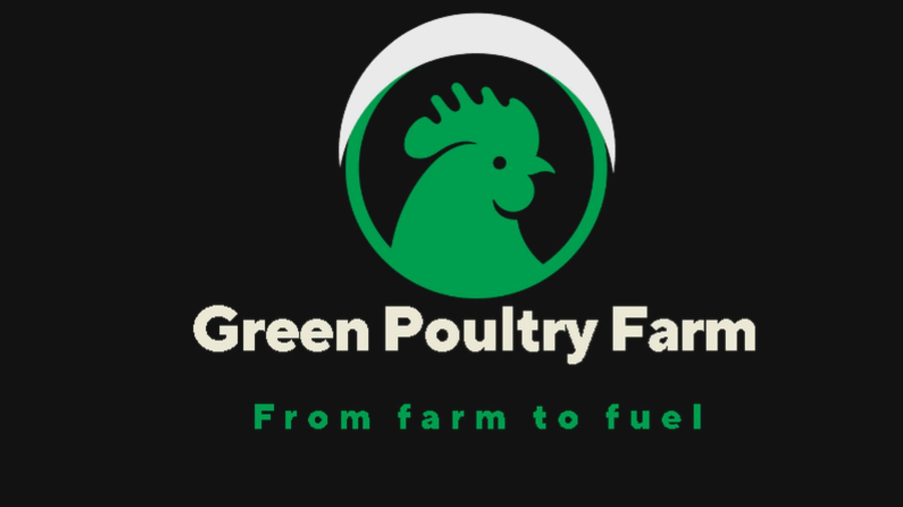
Green Poultry Farm Mozambique
Converting Poultry Waste into Biogas and Biofertilisers

Converting Poultry Waste into Biogas and Biofertilisers
Green Poultry Farm Mozambique is a social project that partners with poultry farmers to convert poultry manure into biogas and biofertilisers. By promoting a circular economy within the poultry sector, the project provides sustainable energy in the form of biogas to smallholder poultry farmers in rural Mozambique.
This approach helps farmers reduce production costs, improve waste management, and generate additional income by selling biofertilisers to local farmers.
Our comprehensive offering includes portable biodigesters for poultry farmers, custom-built biodigesters using local materials, high-efficiency cooking stoves, IoT-integrated monitoring software with AI-powered assistance, and hands-on training in anaerobic digestion technology, biodigester assembly, and handling.
Collection of poultry manure and agro waste provides consistent feedstock for biogas production.
Manure and agro-waste are processed in biodigesters, where microorganisms break down organic matter, producing methane-rich biogas.
Biogas powers poultry production facilities and provides clean cooking fuel, making farms energy self-sufficient.
Nutrient-rich bio-slurry from the digester is processed into organic fertilizer, sold to local farmers.
Compact, easy-to-install biodigesters designed specifically for poultry farmers to convert manure into clean cooking gas
Built from scratch using local materials, tailored to specific farm requirements and biomass availability
Clean cooking stoves optimized for biogas and biomethane use, reducing indoor air pollution and fuel consumption
Smart software integrating IoT sensors for real-time monitoring, biogas production forecasting, and AI agent support
Hands-on training sessions in anaerobic digestion technology, biodigester assembly, operation, and maintenance
Technology to upgrade biogas to biomethane, increasing energy content for more efficient cooking and power generation
All organic waste transformed into energy and fertilizer
Reduces 150 tons of CO₂ equivalent annually
Efficient water recycling systems minimize consumption
Bio-fertilizer improves soil health for local farmers
Browse through our projects, installations, and training sessions
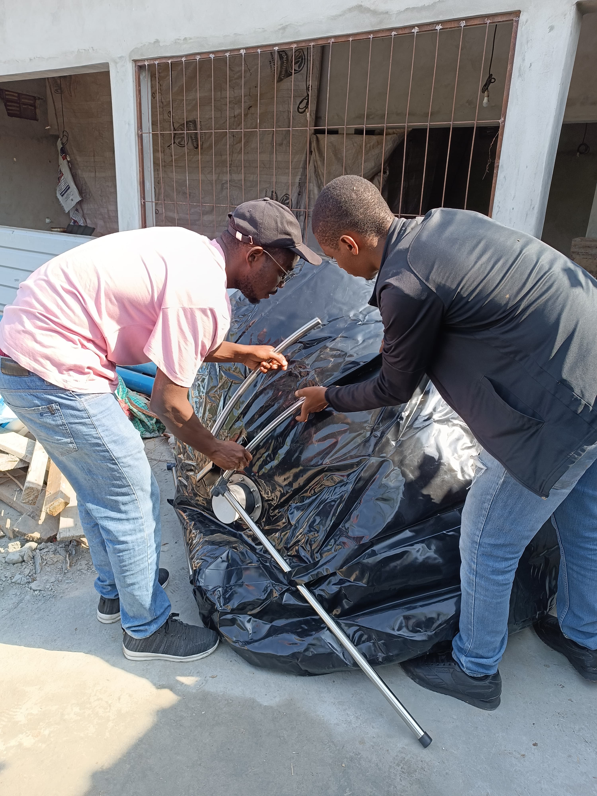
Biodigester Installation
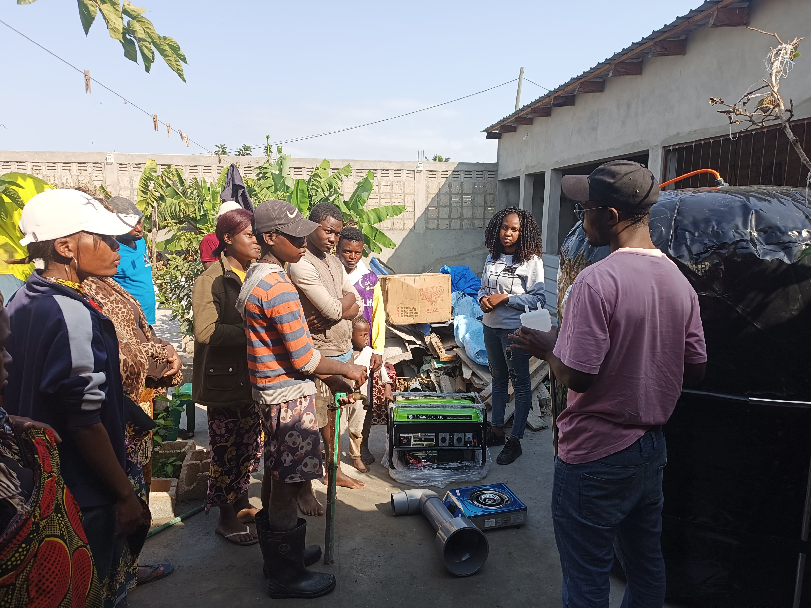
Farmer Training Session
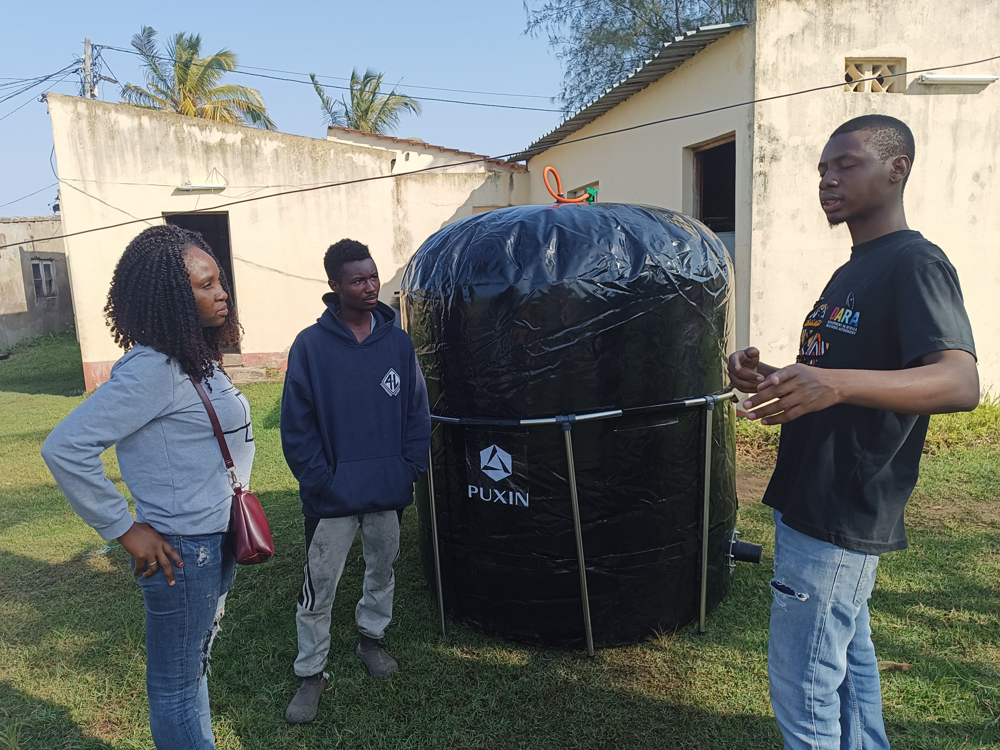
Portable Biodigester Unit
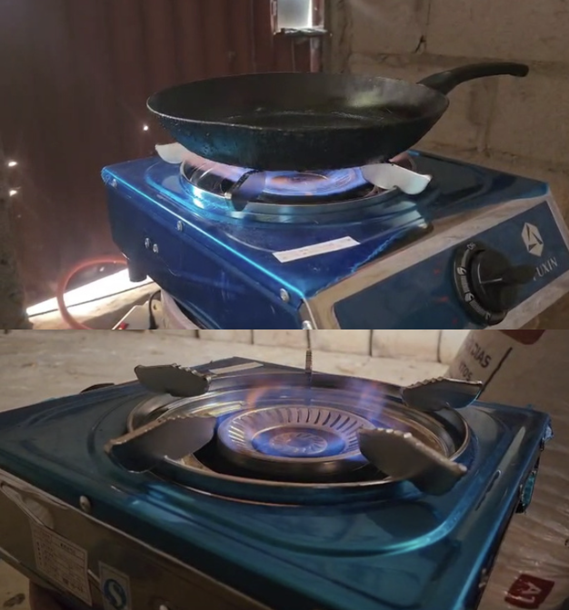
High-Efficiency Cooking Stove
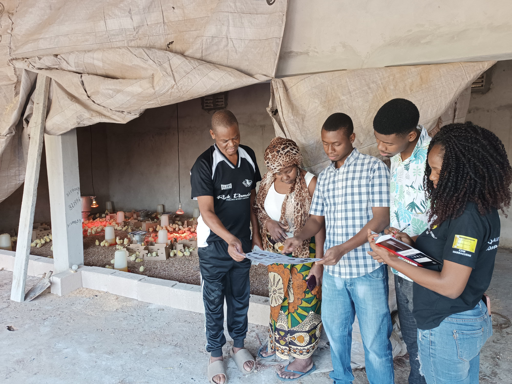
Community Engagement

Biogas Production System
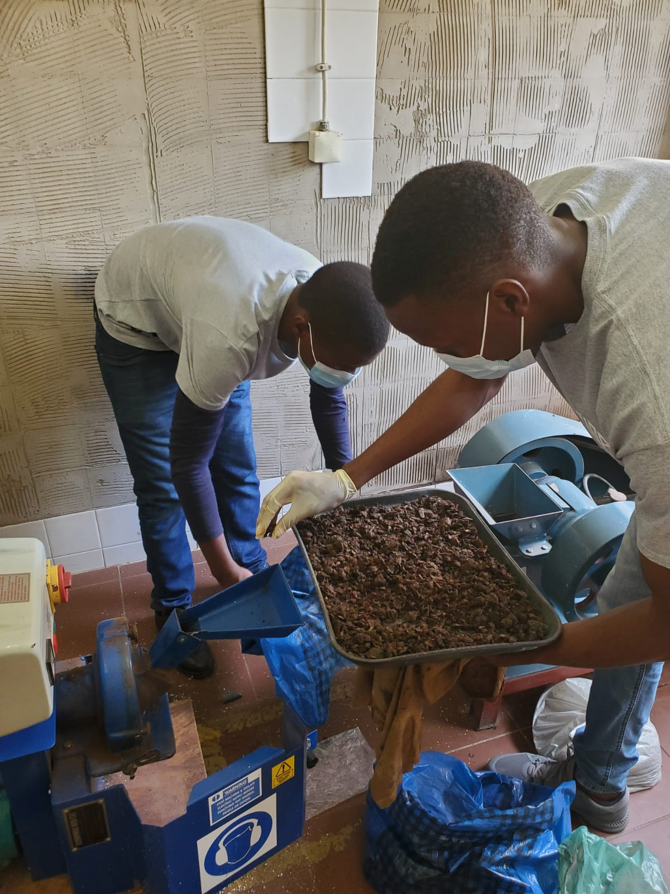
Organic Biofertilizer
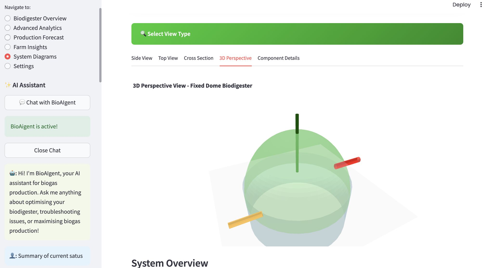
IoT Monitoring System
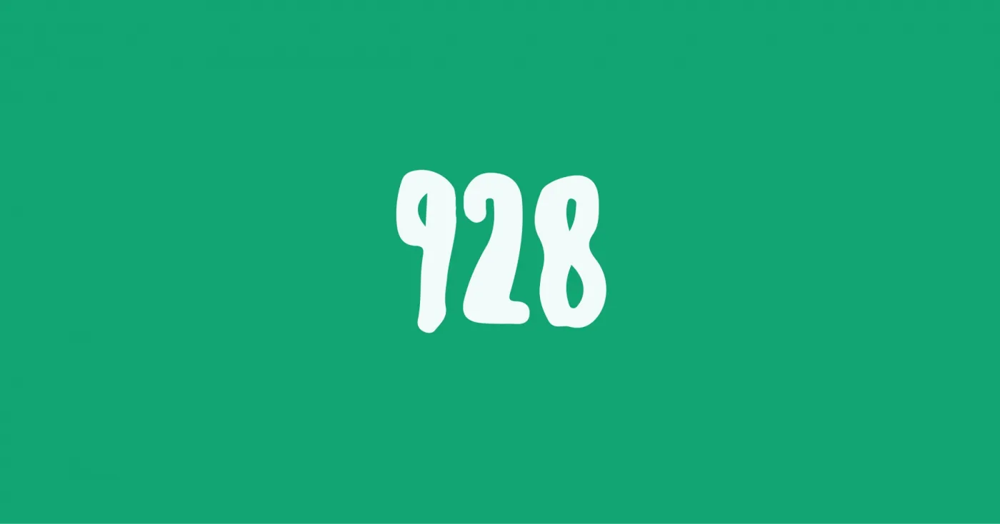
2nd place winners in the University Idea category
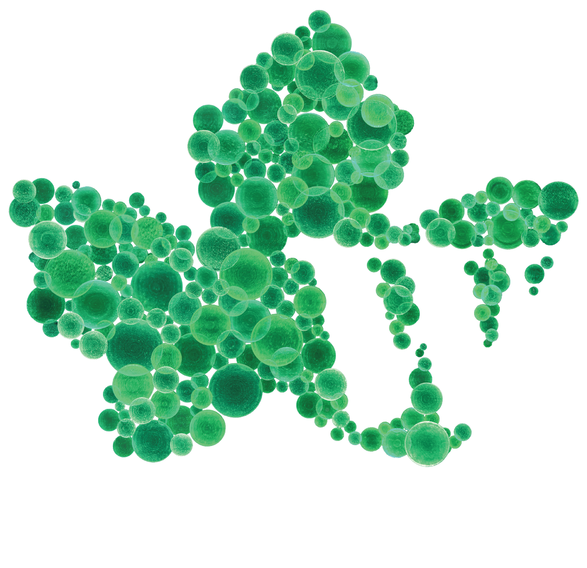
2nd place winners
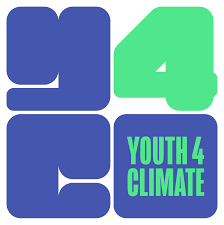
Youth4Climate Award
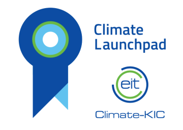
1st place winners
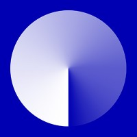
Impact Maker Nominee
Enterprising Futures Scholarship 2025
We provide consulting, training, and technical support to help you implement sustainable poultry farming with integrated renewable energy systems.